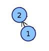

Members
Related Entries
We chose the biological database NCBI, where each entry is a paper. NCBI stands for the National Center for Biotechnology Information and is a part of the United States National Library of Medicine. More information can be found here. We chose this database because it contains a variety of published papers regarding biotech research, and as such can be considered a biological database. Here, we use "biology" to mean the study of life.
Our criteria for determining similiarity is inspired by the Erdos number used to describe the connectedness of mathematical researchers. While the Erdos number measures the degree of separation between the authors of papers, we measure the distance in terms of citations between the papers in the same database.
We propose that the distance between papers in the same database can be computed by building a directed graph G = (V, E), where each vertex v in V represents a paper p in the database. A citation from one paper p to another paper q is represented by a single directed edge e in E. The "distance" is the shortest path from one vertex to another.
The two entries we chose are:
Paper 1: KB-Rank: efficient protein structure and functional annotation identification via text query.
Paper 2: Protein bioinformatics databases and resources.
The second paper is referenced by the first, thus the distance is 1.
Below is a graph of the path between these two papers.

We would consider the papers to be closely related in this case.